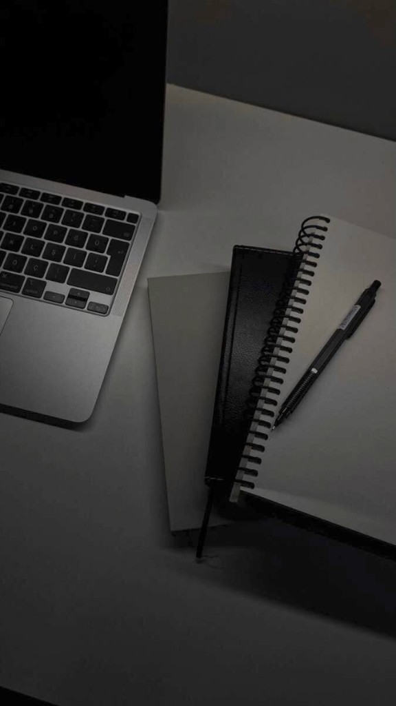
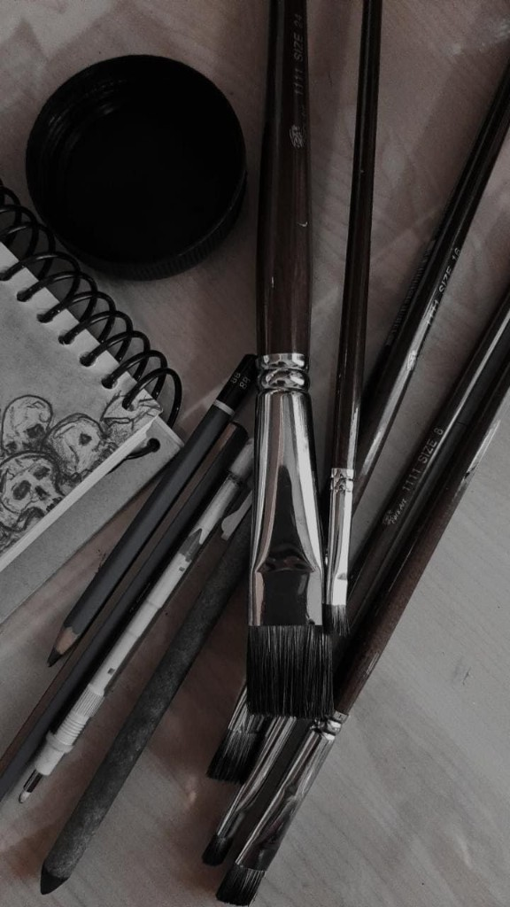
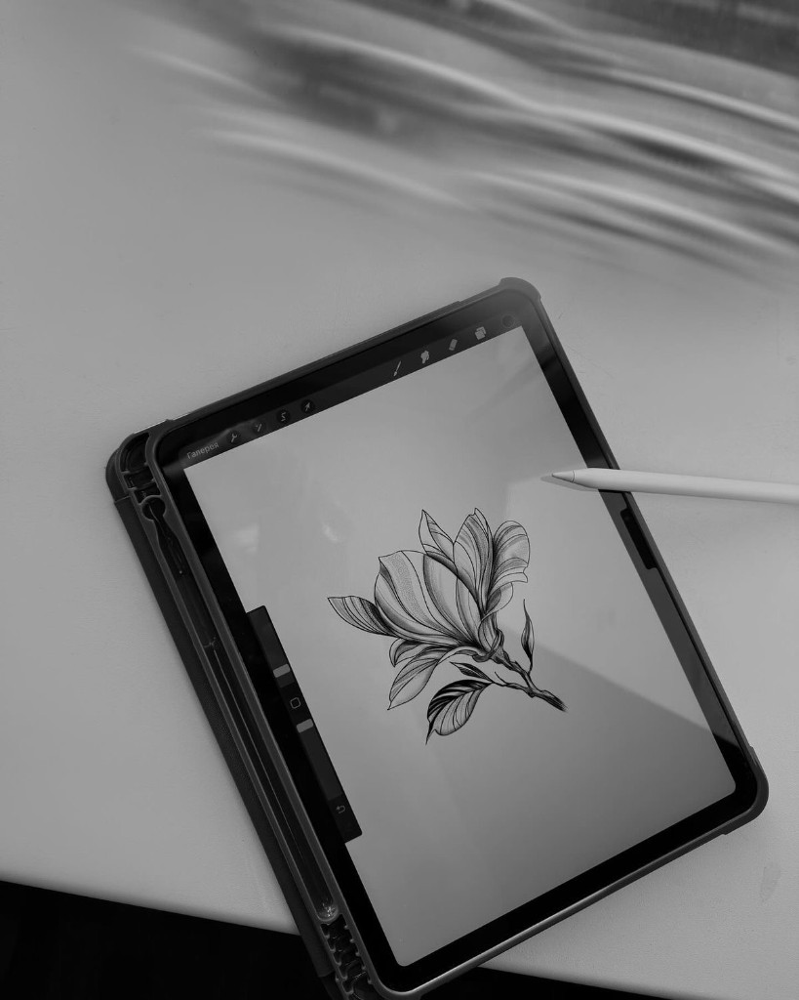

← Back to My work
Blogs & writings
Essays, studio notes, and reflections on art, design, and the creative process.

On color, memory, and making
Reflections on how everyday palettes find their way into canvas and sketchbook.

Studio notes from a rainy week
Process diary — drafts, false starts, and the pieces that finally clicked.

Designing with restraint
Why less can carry more weight in visual work and personal projects.